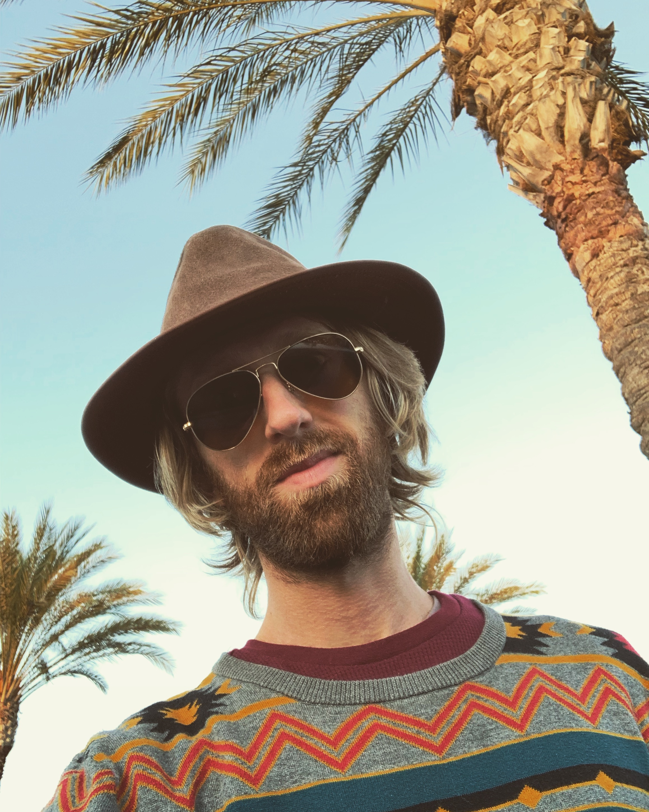

About Me

Education & Experience
- B.A. Liberal Arts, business minor: Utah State University, 2013
- Permaculture Design Course, Punta Mona, Costa Rica: 2018
- 200 hr Yoga Teacher Training, SYI, Peru: 2015
- 8 years managing outdoor cannabis farm, Northern California
- Solar Photovoltaics 100, 2017, Solar Living Institute, Hopland, California
- Aspiring software developer, Epicodus, 2020
Hobbies & Interests
- Botany, mycology, gardening, foraging
- Travel
- Adventuring with my wolf dogs
- Guitar, piano, drums, singing, music production, dancing, concerts
- Yoga, meditation, massage
- Wild nature, simple beauty, diverse landscapes
- The Grateful Dead
- Health, wellness, exploring human potential
Places I Have Lived & Visited (Chronological Order)
- Chicago, Illinois: 13 years
- Lindon & Logan, Utah: 7 years
- Paris & Annecy, France: 2 weeks
- Arcata, California: 10 years
- Nelson, B.C., Canada: 1 month
- Valparaiso, Chile: 2 months
- Anchorage, Homer, Fairbanks, Alaska: 1 week
- Sacred Valley, Peru: 6 weeks
- Kauai, Big Island, Hawaii: 3 weeks
- Lake Atitlan, Tikal, Guatemala: 2 weeks
- Punta Mona, Puerto Viejo, Uvita, Costa Rica: 1 month
- Yucatan, Mexico: 2 weeks
- Portland, Oregon: 2 months